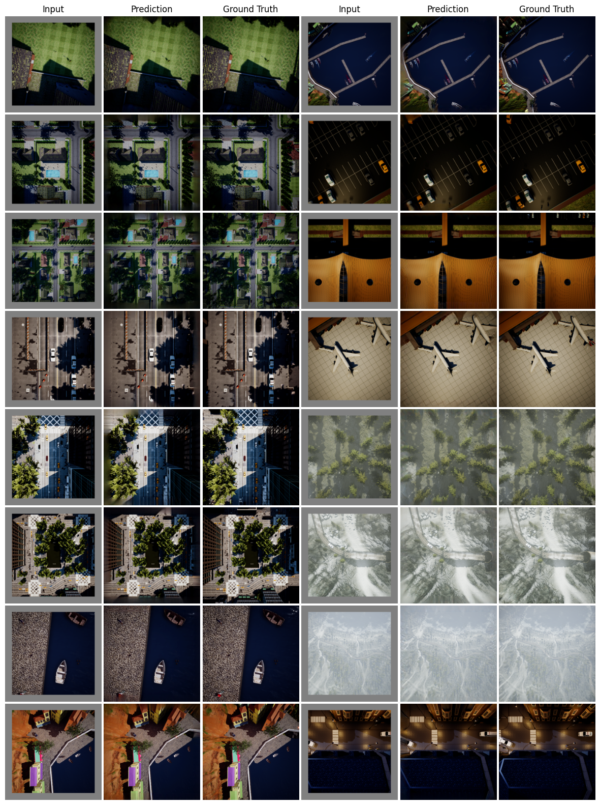

Outdoors 1.17x Expansion

2D top-down maps are commonly used for the navigation and exploration of mobile robots through unknown areas. Typically, the robot builds the navigation maps incrementally from local observations using onboard sensors. Recent works have shown that predicting the structural patterns in the environment through learning-based approaches can greatly enhance task efficiency. While many such works build task-specific networks using limited datasets, we show that the existing foundational vision networks can accomplish the same without any fine-tuning. Specifically, we use Masked Autoencoders, pre-trained on street images, to present novel applications for field-of-view expansion, single-agent topological exploration, and multi-agent exploration for indoor mapping, across different input modalities. Our work motivates the use of foundational vision models for generalized structure prediction-driven applications, especially in the dearth of training data.
We use a pre-trained Masked Autoencoder (MAE), trained on ImageNet dataset, to increase the FOV of the top-down images in various settings. The additional field is used as a masked region in the input to MAE and the output of the MAE is added to the original masked input. We vary the extent of masking to study the efficacy of MAE prediction.
We evaluate prediction quality on both indoor and outdoor scenes. Robotic tasks often rely on a variety of modalities for tasks. Keeping this in mind, we study 3 types of input modalities: (1) RGB images, (2) Semantic segmentation maps, and (3) Binary maps (as proxy for occupancy map).
We use VALID dataset for outdoors and AI2-THOR for indoor images in our evaluation.
MAE is pre-trained on RGB images with the dataset consisting mainly of street-view/first-person view images. The results here answer if they can be used effectively on top-down images.
MAE is pre-trained on RGB images and can work well on top-down RGB images as well. We further examine if this performance can be repeated on semantic segmentation maps by treating them as RGB images.
Binary maps are skin to occupancy maps and represent a low-fidelity representation of navigation maps. We use them as RGB images as well and find out MAE performs on them. In the binary maps shown below we use bright regions to represent navigable regions.
Table 1: Increasing the FOV in RGB images
| Environment | Expansion | FID | SSIM | PSNR | MSE |
|---|---|---|---|---|---|
| 1.17x | 17.83 | 0.94 | 27.76 | 13.76 | |
| Indoor | 1.40x | 41.79 | 0.86 | 22.23 | 32.42 |
| 1.75x | 76.59 | 0.78 | 19.18 | 52.98 | |
| 1.17x | 53.66 | 0.84 | 26.38 | 33.59 | |
| Outdoor | 1.40x | 77.91 | 0.69 | 22.79 | 49.91 |
| 1.75x | 116.09 | 0.55 | 19.98 | 67.80 |
Table 2: Increasing the FOV in Semantic segmentation maps
| Environment | Expansion | mIoU | FID | SSIM | PSNR |
|---|---|---|---|---|---|
| 1.17x | 0.86 | 43.48 | 0.94 | 23.06 | |
| Indoor | 1.40x | 0.55 | 75.42 | 0.84 | 17.33 |
| 1.75x | 0.34 | 110.01 | 0.78 | 14.90 | |
| 1.17x | 0.90 | 42.63 | 0.94 | 25.96 | |
| Outdoor | 1.40x | 0.73 | 73.03 | 0.86 | 21.39 |
| 1.75x | 0.57 | 118.56 | 0.79 | 18.80 |
Table 3: Increasing the FOV in Outdoors Binary maps
| Expansion | mIoU | FID | SSIM | PSNR |
|---|---|---|---|---|
| 1.17x | 0.90 | 51.87 | 0.95 | 30.36 |
| 1.40x | 0.78 | 88.44 | 0.76 | 22.05 |
| 1.75x | 0.64 | 120.94 | 0.56 | 17.81 |
MAE are trained similar inpainting networks, and thus have the potential for inpainting. We use this capability to present a use-case where it could be used to remove unwanted objects from top-down images (RGB, segmentation, or binary maps). This could be useful for a team of heterogeneous robots (UAV-UGB), or for offline data curation.
Uncertainty estimation in predictions can be used for safe deployemnt and guided exploration and navigation of mobile robots. MAEs are deterministic networks and are not trained with dropouts. We extract prediction uncertainty in MAEs by perturbing input images with random noise (similar to adverserial attack) and quntify the average variace across channels as the uncertainty.
The videos below show some exmaples of the four algortihms used in our paper.
Lawnmower devied the environement in contiguous scanlines and assigns a robot to each.
KMeans-U uses KMeans over unexplored locations and assigns the robots to the cluster centers.
KMeans-R uses KMeans over unexplored locations and assigns the robots to the cluster centers. Addionally, it makes the robots move to the center after the ckuster centers stop updating/moving.
KMeans-U2 uses KMeans over unexplored locations as well as locations with non-zero variance and assigns the robots to the cluster centers.


We try increasing FOV over the costmap generated by a Hokuyo scanner (270-degrees FOV) mounted on a Turtlebot2 (thr robot is moving towards right in thr images below). The results are encouraging and will be explored further in future.
Masked Autoencoders Are Scalable Vision Learners. Kaiming He, Xinlei Chen, Saining Xie, Yanghao Li, Piotr Dollár, Ross Girshick. CVPR 2022.
VALID: A Comprehensive Virtual Aerial Image Dataset. Lyujie Chen, Feng Liu, Yan Zhao, Wufan Wang, Xiaming Yuan, Jihong Zhu. ICRA 2022. (Dataset Link)
AI2-THOR: An Interactive 3D Environment for Visual AI. Eric Kolve, Roozbeh Mottaghi, Winson Han, Eli VanderBilt, Luca Weihs, Alvaro Herrasti, Matt Deitke, Kiana Ehsani, Daniel Gordon, Yuke Zhu, Aniruddha Kembhavi, Abhinav Gupta, Ali Farhadi. (Simulator Link)
@article{fliptd,
author = {Sharma, {Vishnu Dutt} and Singh, Anukriti and Tokekar, Pratap},
title = {Pre-Trained Masked Image Model for Mobile Robot Navigation},
journal = {arXiv},
year = {2023},
}